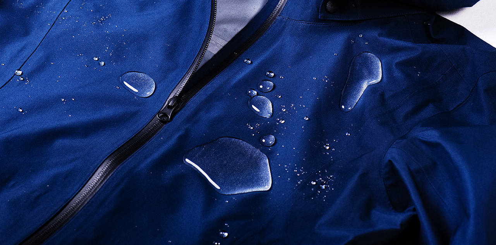

To maintain your gear and extend its lifespan, regularly clean, dry, and reactivate the DWR (Durable Water Repellent) treatment. This keeps the material's waterproof and breathable properties intact.
Always check the washing instructions for your eTINPO gear. Use specialized detergents to avoid residue that can affect the DWR treatment, and dry your gear at low temperatures to reactivate its coating.
Proper care ensures your gear continues to offer excellent protection and comfort, keeping you ready for any outdoor activity.

Machine washable, gentle cycleBefore washing, zip up all the zippers, including pockets and underarms, and secure all hook and loop fasteners. For heavily soiled areas, pre-treat with high-performance cleaners such as Nikwax Tech Wash or a mild detergent for targeted cleaning, helping protect the garment and ensure effective cleanliness.
Please line dry in shade or tumble dry it at a low heat: below 40°C.
Please use a steamer to steam the garment below 100°C. Please do not use an iron.
Please note that fabric softener, dry clean and bleach are prohibited.
For long-term storage, hang the garment or lay it flat. Avoid storing with desiccants.